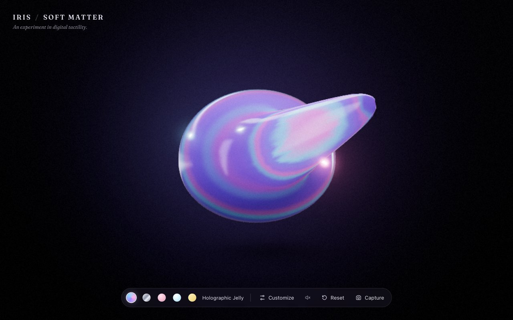
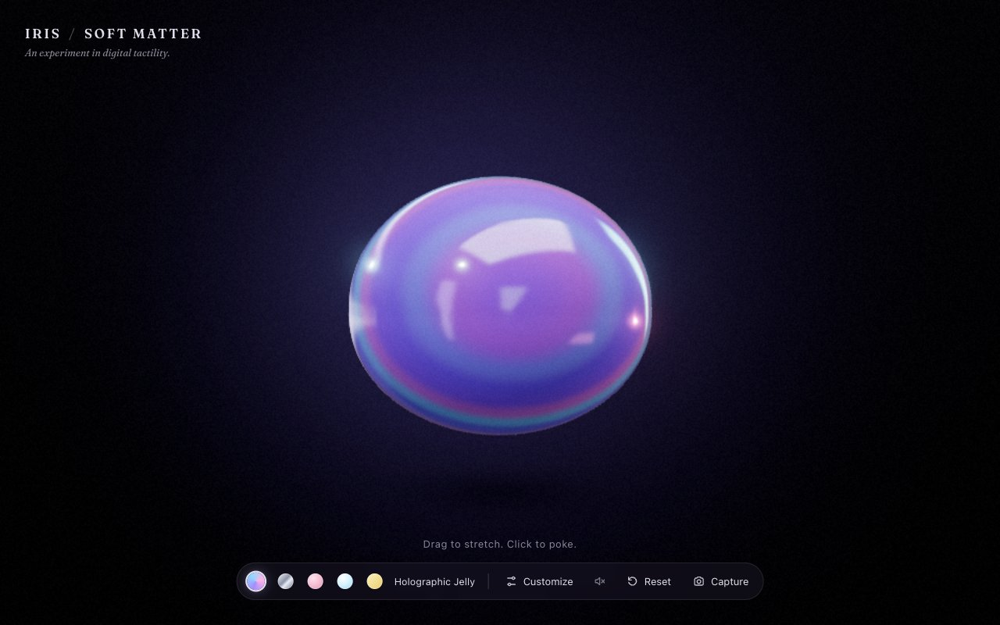
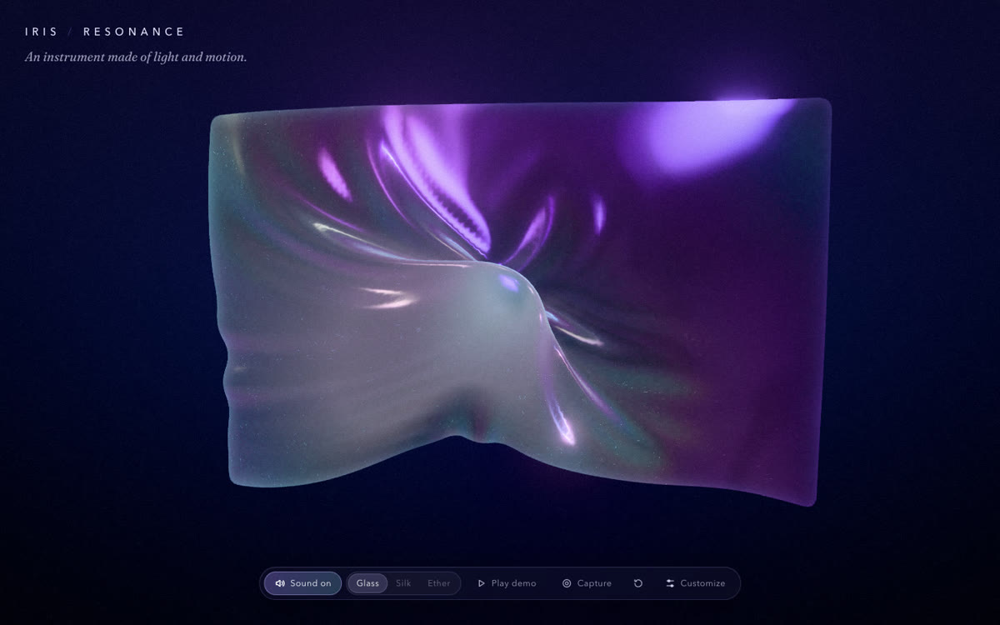
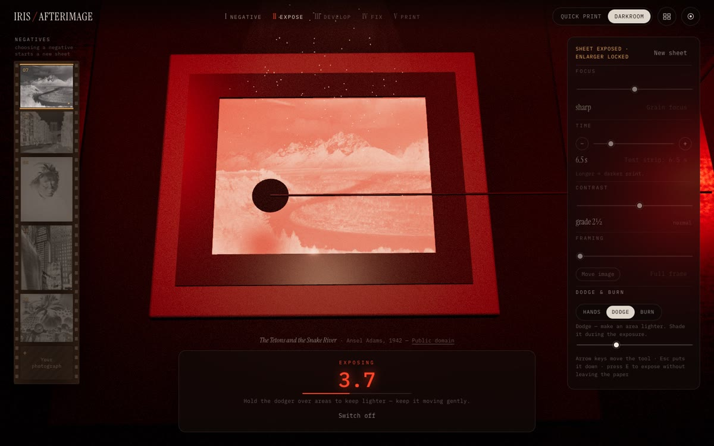
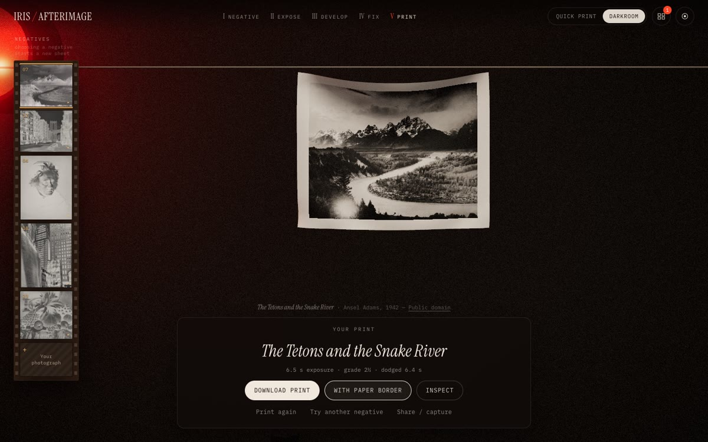

Three experiments, each built around one question about what makes something on a screen feel physical. A slime you pull: what makes a material satisfying to touch? A fabric you play: what happens when motion and sound come from the same physics? A darkroom: can exposure and development be processes, not filters? Each runs in the browser and is open source.
Role
Design and engineering
Stack
three.js · React · TypeScript · Web Audio · custom simulation (no physics or audio libraries)
Built
All three started 12 October 2026; last commits 12–13 October
Lineage
Grows out of Iris, an adaptation of Holocloth by Dmitry Kurash (MIT)
00 — Lineage
Three investigations from one cloth.
The series starts from someone else's work. Holocloth is a holographic cloth simulation by Dmitry Kurash, MIT-licensed. Iris adapted it in July. The three experiments followed in October and took different parts of it with them, which their repositories credit file by file.
22 Jul 2026
Holocloth
Dmitry Kurash. Verlet cloth, holographic foil shader, film grain. MIT.
24–30 Jul 2026
Iris
Adapted and rebranded; the license keeps both copyright lines.
12–13 Oct 2026
Resonance · Afterimage
Reuse the Verlet cloth structure (a fabric; a sheet of photographic paper) and the grain pass.
12–13 Oct 2026
Soft Matter
A new soft-body solver; keeps the grain pass and an adapted foil shader.
01 — Soft Matter
A slime you can pull, poke and squish.
When does a digital material become satisfying to touch?
One holographic blob in a dark studio. Drag it and a glob stretches out on a neck; let go and it sags back rather than snapping. Poke it and the dent springs out. Press and hold to squish. Five materials (jelly, chrome, putty, clear, butter) change how it moves, how it catches light and how it sounds.
The body is a soft-body simulation written from scratch: 2,562 particles on a sphere, solved 120 times a second. A volume constraint means a dent bulges out somewhere else. Its return to shape is split in two: a springy part that wobbles, and a slow part that creeps. The springy part is capped, so a small poke bounces back but a big stretch sags home slowly.

Mid-pull. The stretched skin shifts hue and brightens. The shader reads strain at every vertex, so colour follows deformation. Captured from the live site

At rest, for comparison. Captured from the live site
Its sound: rendered offline from the jelly material. Every sound is shaped noise, never an oscillator.
A skin that accepts a stretch, then forgets it.
Every 120th of a second, after the solver runs, each edge's rest length moves toward its current length and also drifts back toward its original length. While you hold a stretch, the skin takes the new length as its own, so there's no stored spring energy to fling it back. Once you let go, the rest lengths creep home and the glob sags. Both rates are frame-rate independent, and the rest length can't go below 0.4× or above 4× the original.
src/sim/softBody.ts
private flowEdges() {
const p = this.positions, E = this.edges, L = this.edgeRest, L0 = this.edgeRest0;
const flow = 1 - Math.exp(-this.coeffs.edgeFlow * SUBSTEP);
const back = 1 - Math.exp(-this.coeffs.edgeRecover * SUBSTEP);
for (let e = 0; e < L.length; e++) {
const a = E[e * 2] * 3, b = E[e * 2 + 1] * 3;
const d = Math.hypot(p[b] - p[a], p[b + 1] - p[a + 1], p[b + 2] - p[a + 2]);
let l = L[e];
l += (d - l) * flow;
l += (L0[e] - l) * back;
L[e] = Math.min(L0[e] * 4, Math.max(L0[e] * 0.4, l));
}
}
A crackle whose density is the pull.
The "sticky" sound is made of grains: noise bursts 3–11 ms long, band-passed between 1.6 and 5.2 kHz. The number of grains per second follows how fast the body is being pulled. Leftover fractions carry from one frame to the next, so density stays right at any frame rate. Each grain starts at a random moment within its frame, so the crackle never lines up with the frame clock. It keeps crackling briefly after release, as the surface comes unstuck.
src/audio/SlimeAudio.ts
A variant: Butter Squishy. The same solver with its rest shape changed to a stick of butter. Local recording
What happens when motion and sound come from the same physics?
One sheet of holographic fabric. Tap it and it plucks a note: left to right climbs a scale, higher up sounds brighter. Press and pull for a sustained tone that bends up as the fabric stretches. Sweep fast and your finger slips across the fabric and catches again, playing harp-like runs. There are three voices (Glass, Silk, Ether), and eleven keys play the same notes.
The coupling is literal. A cloth simulation handles big, slow shape changes. A wave equation running 240 times a second carries the ripples you see; every ripple on screen is simulation state. A background drone follows the measured energy of those ripples, not a list of notes played. Each voice's ring time sets both how long the ripples last and how long the sound decays, "so eyes and ears agree".
With sound: plucks, a stretch and a release. The audio is what the instrument actually generated during the recording. Local recording · press play

Stretching bends the pitch up, smoothly capped at two semitones. Repository screenshot
The Glass voice, a showcase phrase rendered offline from the instrument's own code.
The ripples are a damped wave equation.
Strikes go into a height field on the cloth grid, which evolves under a damped wave equation, with a restoring force so it rings like a drumhead. The edges are fixed, so waves reflect back. Wave speed is clamped so the simulation stays stable. The damping comes straight from the voice's ring time, and the field's total energy is what drives the background drone.
src/physics/waveField.ts
// c² in cells²/s²; clamp for stability (c·dt < 0.7 cells)
const c = Math.min(params.speed, 0.7 / WAVE_SUBSTEP);
const c2 = c * c;
const w0 = 2 * Math.PI * Math.max(0, params.restoreHz);
const k = w0 * w0;
const damp = Math.exp(-WAVE_SUBSTEP / Math.max(0.05, params.decay));
for (let y = 1; y < rows - 1; y++) {
const row = y * cols;
for (let x = 1; x < cols - 1; x++) {
const i = row + x;
const lap = h[i - 1] + h[i + 1] + h[i - cols] + h[i + cols] - 4 * h[i];
const acc = c2 * lap - k * h[i];
let v = h[i] + (h[i] - hp[i]) * damp + acc * dt2;
Gesture-to-music mapping as small, tested functions.
Position picks a scale step, height picks brightness, stretch bends pitch. The bend curve flattens out at two semitones, so pulling harder stays musical. When your finger rests on the boundary between two notes, a small hysteresis margin stops it flickering between them. These mappings are pure functions, covered by the unit tests.
src/music/mapping.ts
/** Positive strain (stretch) → upward bend in semitones, smoothly capped. */export function bendForStrain(strain: number): number {
const s = clamp(strain, 0, 10);
return MAX_BEND_SEMITONES * Math.tanh(s * 9);
}
Can exposure and development be processes instead of filters?
Pick a negative, focus the enlarger, set the time and contrast grade, and expose. While it exposes you can hold back light from part of the print (dodging), and afterwards add more to another part (burning). Slide the sheet into the developer and the image comes up under red safelight, shadows first. Then stop, fix, and hang it to dry. A finished print downloads at 2,400 px.
Each stage models a real process. The negative is stored as density. Exposure builds up as a map of seconds. The paper responds along a characteristic curve whose contrast grades all pivot on the same mid-tone, as multigrade filters do. Development is a function of time with a slight delay that agitating the tray evens out.
Development. The blank sheet fills in, shadows first. 14 seconds from the repository's automated demo (silent). Photograph: Ansel Adams, The Tetons and the Snake River (1942), public domain. Local recording

Dodging during exposure: the disc holds back light from part of the print. Repository screenshot

The finished print keeps a record of how it was made. Repository screenshot
One development formula, shared by CPU and GPU.
Each point in the tray develops along the same exponential curve, starting after a delay that depends on when the developer reached it and on how unevenly it covered the sheet. Agitating the tray only ever evens development out; it never undoes it. The shader that draws the tray and the code that renders the downloaded print use the same formula, with constants inserted from the same objects. A unit test checks the shader contains those constants. So a print pulled out early looks the same on screen and in the file.
The enlarger settings lock when exposure starts. That means every point's exposure is just the light coming through the negative there, multiplied by the seconds it received. Dodging and burning only edit a coarse map of those seconds: dodging subtracts, burning adds, and nothing goes below zero. Every stroke is recorded and replayed to build the full-resolution file. The end-to-end test checks the downloaded print itself: its size, its tonal range, its similarity to the source photo, and proof that it went through the paper model.
Vercel; no CI yet, so deploys aren't gated on tests
Afterimage
43 / 43
31 tests, including checks on the exported print's pixels; not re-run here
GitHub Pages, type check and tests gate the deploy
Unit tests re-run on 21 October 2026. All three live sites respond. No user research is claimed; these are experiments, not products.
05 — Credits
Whose work this builds on.
Holocloth by Dmitry Kurash (MIT) is the origin of the cloth simulation, the holographic foil shader and the film-grain pass. Resonance and Afterimage keep its Verlet cloth structure, and every repository's licence keeps his copyright line. Resonance lists the adapted files in a third-party notices file. The grain pass uses a widely shared "hash without sine" pattern, which came in through Holocloth.
Soft Matter's solver draws on published methods: XPBD (Macklin et al.), shape matching (Müller et al.) and PN triangles (Vlachos et al.). Afterimage's negatives are public-domain photographs, credited in the repository.